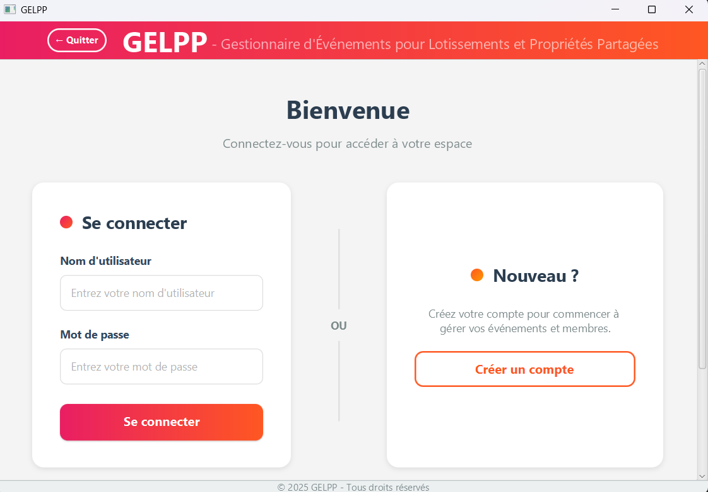
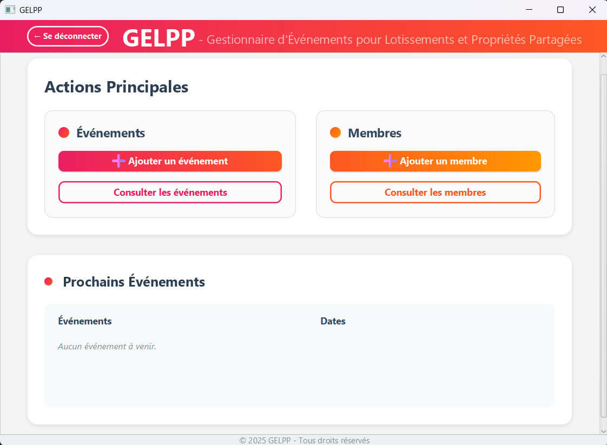
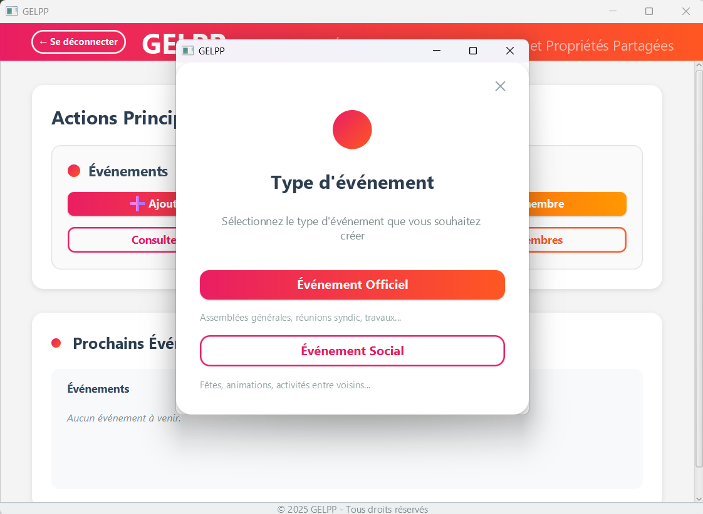
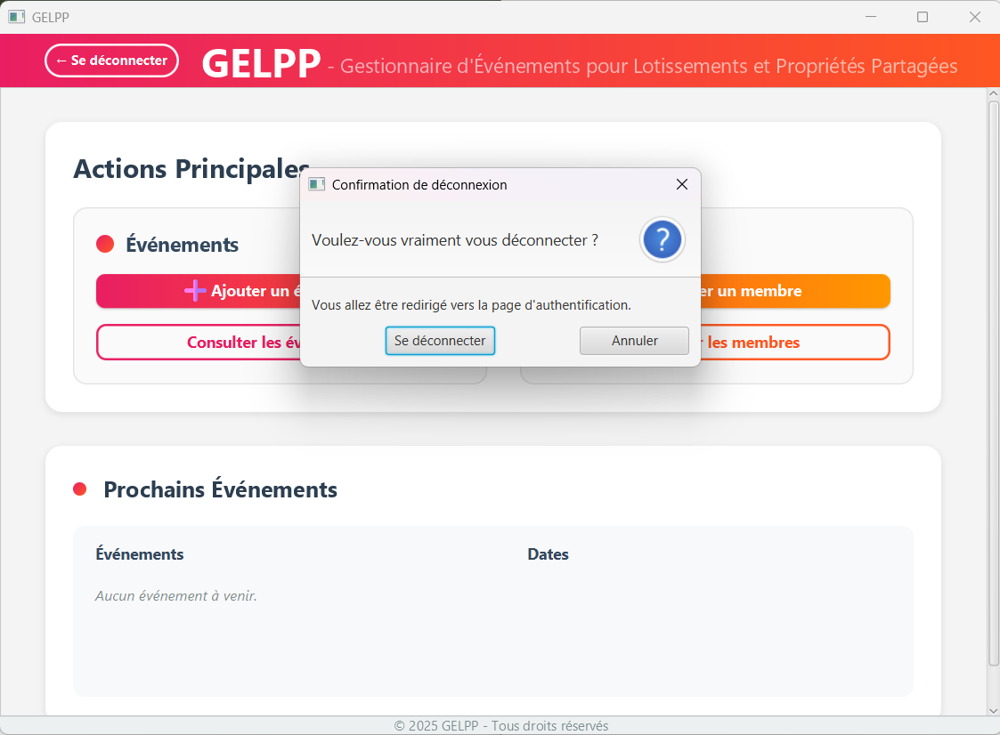
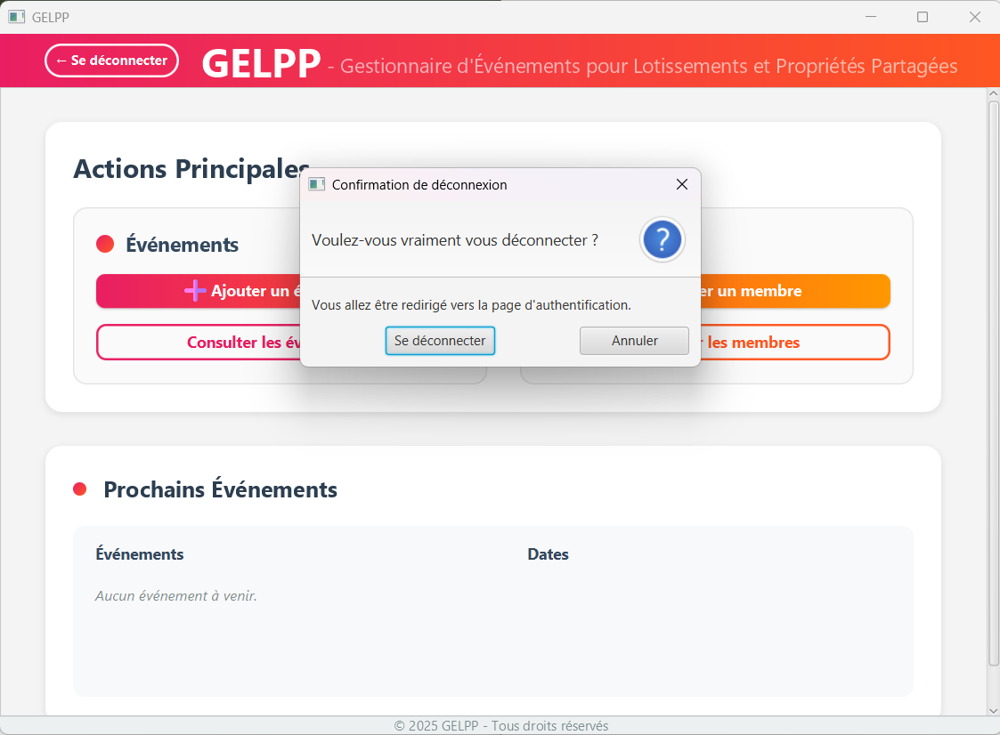

Création d'une Application de gestion d'évènements
Présentation du projet
Du mois d'avril 2025 au mois de juin 2025, dans le cadre d'un projet académique, nous avons réalisé une application de gestion d'évènements. Ce projet a été mené par équipes de 5 étudiants. Nous avons du, dans un premier temps définir quels types d'évènemnts nous voulions prendre en charge avec notre application. Dans le même temps, nous avons du organiser notre équipe en définissant les roles de chacuns. Suite à cela, nous avons pu commencer à réfléchir sur notre projet. Nous avons donc créer un dossier d'analyse et de conception qui devait contenir divers diagrammes, tels qu'un diagramme des cas d'utilisation, un diagramme de classe métiers, ou encore des diagrammes d'objet. Nous avons également du réaliser un dossier d'IHM, pour lequel nous devions créer des personnas, faire une présentation des critères ergonomiques de notre application et une maquette des interfaces. Nous avons du faire un travail de cadrage, pour analyser les contraintes et les risques de notre projet. Nous avons ensuite pu coder notre application. Nous avons fini par présenter notre projet à l'oral au travers de tois oraux, un pitch en anglais, la présentation d'un Lean Canvas de notre projet et enfin une présentation de notre projet et de la façons dont nous avons organisé sa realisation.
Notre projet
Pour ce projet, nous avons décidé de créer une application qui permaittrait la gestion de de réunions ou d'évènements festifs au sein d'une copropriétée. Le but de cette application étant de faciliter l'organisation des copropriétées, notament lorsque la gestion est effectué bénévolement par des résidants. Notre application devait donc s'adresser à un large public est donc être facillement accessible. C'est ainsi que nous avons créer notre application GELPP (Gestionnaire d’Evénements pour les Lotissements et Propriétés Partagées). Lors de la réalisation des dossiers, j'ai travaillé sur les cas d'utilisation, j'ai également créer l'un des personnas et ais participé à la rédaction ainsi qu'à la relecture des dossiers. Durant la phase de code, après une concertation générale, nous codions ce qui avait été décidé, avant de mettre en commun à l'aide du site GitLab. Comme demandé dans les consignes, nous avons codé notre application avec le langage de programmation Java. J'ai principalement travaillé sur les fonctions concernant l'ajout d'évènement social, ainsi que sur une partie des tests du projet. J'ai également participé à la relecture du code. Lors des passages à l'oral, nous avions partagé de manière équitable le temps de parole pour la présentation de notre application, ainsi que pour le pitch en anglais. Pour la présentation du Lean Canvas, nous avons décidé qu'une seule personne de notre groupe parlerais.
Notre projet en images
   
